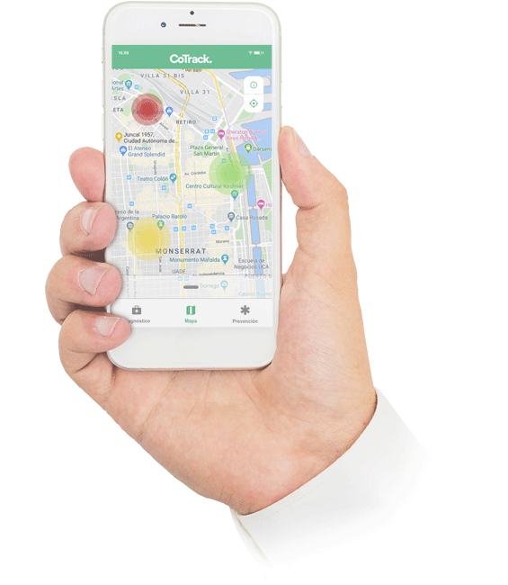
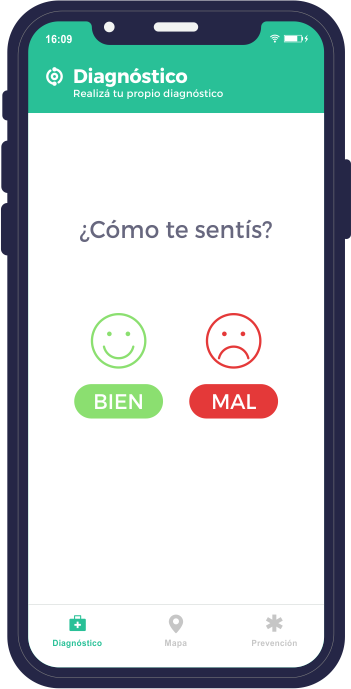
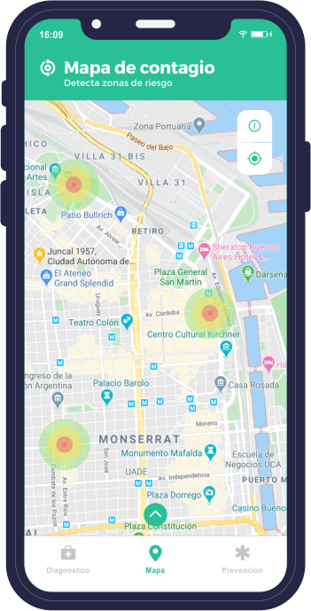
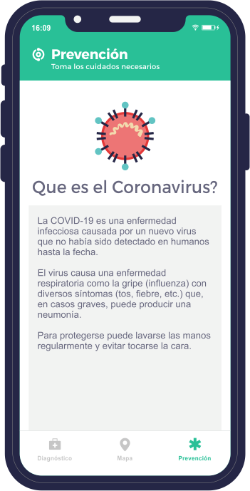
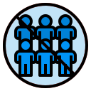
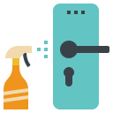
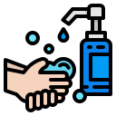
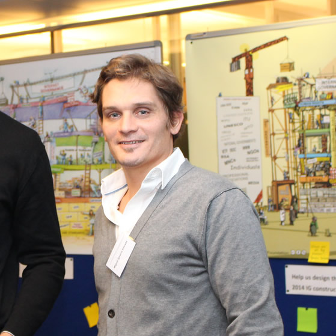

A través de CoTrack podés mantener un
registro de sintomatología en el tiempo y
recibir alertas, información de contacto con
organismos de salud y recomendaciones.
Podemos cruzar nuestra información de GPS con la de aquellos contagios certificados por entes gubernamentales y saber si debemos extremar medidas precautorias. También, informar si decidimos iniciar una autocuarentena y reportarnos entre nosotros. A más información, más prevención, entre todos.

Descargar
Estamos trabajando sin parar para lanzar esta app y empezar a colaborar entre nosotros.
Muy pronto podrás acceder a descargar la aplicación.
Diagnóstico

Mapa

Prevención

Prevención
Cómo cuidarnos
La principal vía para la diseminación del virus es mediante el estornudo de una persona enferma y la circulación de objetos contaminados. El virus no se ve, pero permanece un tiempo variable según el objeto.
La principal vía de contagio es a través de las manos, tocando un objeto contaminado y llevándose las manos a la boca.
Esta epidemia requiere que colaboremos con medidas simples, que apuntan a disminuir la probabilidad de contagio entre las personas.
SEPARACIÓN SOCIAL
Tratá de mantener siempre una distancia mayor a 1 metro con los demás.
CONTACTO CORPORAL
Evita tocar las manos o la cara para saludar o interactuar con otras personas.
AGLOMERACIONES

Evitá concurrir a lugares donde estarás con más de 20 personas.
AUTOAISLAMIENTO
Si tenés síntomas de gripe quedate en tu casa, no concurras a tu trabajo o a lugares públicos. Consultá a las líneas de atención profesional para saber cómo proceder.
HIGIENE AMBIENTAL

Mantené la limpieza, principalmente de las superficies donde usás las manos (picaportes, canillas, teclados, asas, etc).
HIGIENE PERSONAL

Mantené tus manos limpias. Evitá tocarte la cara. Cubrite con el pliegue del codo y no con las manos al estornudar.
¿Cuándo Consultar?
Ante la presencia de fiebre y síntomas respiratorios como tos, dolor de garganta, dificultad para respirar y haber permanecido en áreas con circulación del virus o al haber estado en contacto con un caso confirmado o probable, se insta a la población a que haga un contacto de inmediato con el sistema de salud, refiera el antecedente de viaje y evite el contacto social.
¿Cuándo hacer Cuarentena?
A las personas que ingresan al país que hayan permanecido en zonas con transmisión del nuevo coronavirus se recomienda permanecer en el domicilio y no concurrir a lugares públicos como ámbitos laborales, recreativos, deportivos y sociales durante 14 días.
TELÉFONOS ÚTILES
Línea de consulta del Ministerio de Salud de la Nación: 0800-222-1002 - Opción 1.
CoTrack Team
Somos un equipo de desarrolladores, comunicadores, diseñadores y profesionales de la industria, trabajando en forma voluntaria a contrareloj para tener CoTrack funcionando y disponible lo antes posible.
Joel Chornik
Co-Founder LatinCloud.com
Brian Dimov
Solutions Architect
Anibal Villarreal
Strategist, Experience designer, Consultant.
Marcos Pazzarelli
Emprendedor / DevOps
Maximiliano Firtman
Programador, Profesor, Speaker y Autor.
Pablo Gillari Ces
Software Architect & DevOps
Nicolas Maiztegui
Emprendedor. Empresario. Coach.
Bryan Tafel
Emprendedor, Developer Relations
Jonathan Tafel
Emprendedor, Software Architect, Consultant
Daniela Facci
Marketing Digital y Prensa
Yair Franco Laime
Diseñador Ux/Ui
Hugo Villafañe
Médico. Emprendedor.
Santiago Bernal
Software Engineer

Miguel Ignacio Estrada
Licenciado en Sistemas
Necesitamos de tu apoyo con la difusión de este desarrollo. Para más información escribinos a traves de Twitter @co_track
Agradecimientos
Estamos recibiendo ayuda y colaboración de diferentes empresas, organizaciones y entidades comprometidas con este aporte, gracias a todos los que se están sumando!


.png)